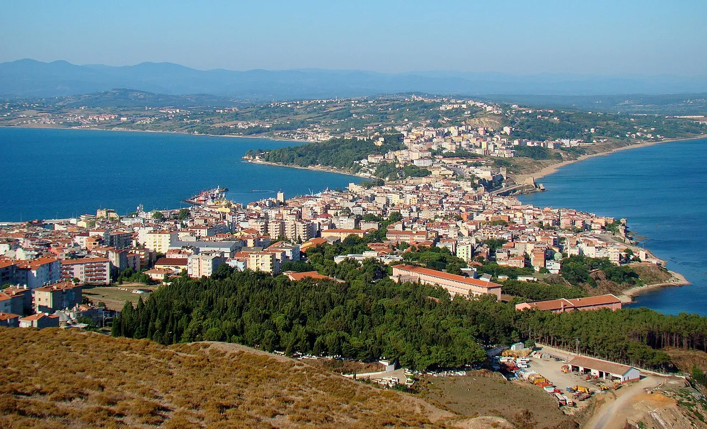
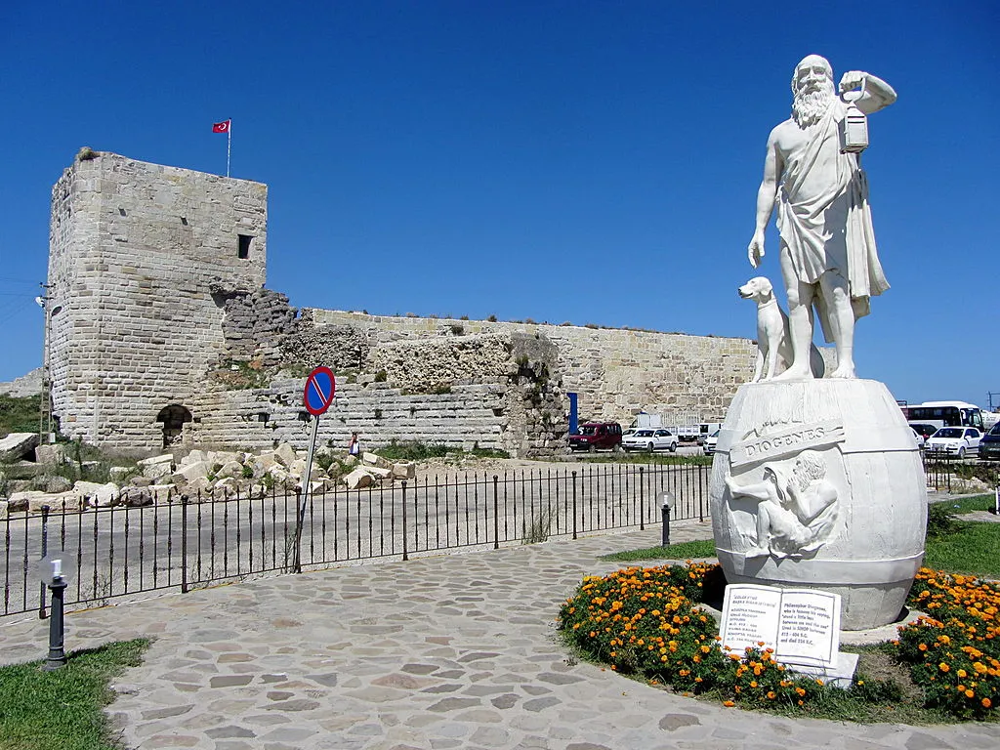
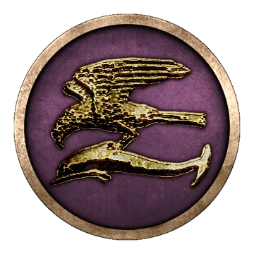
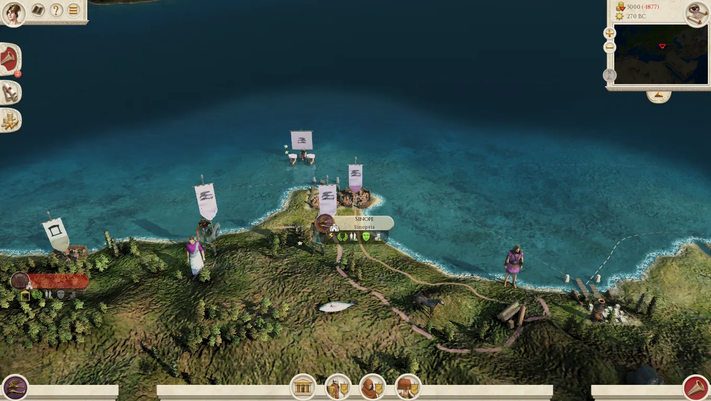
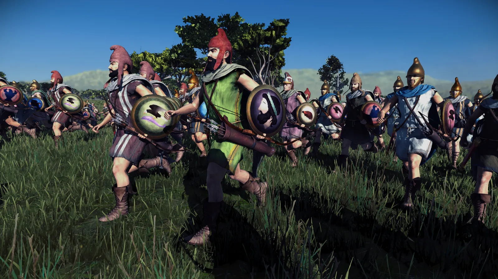
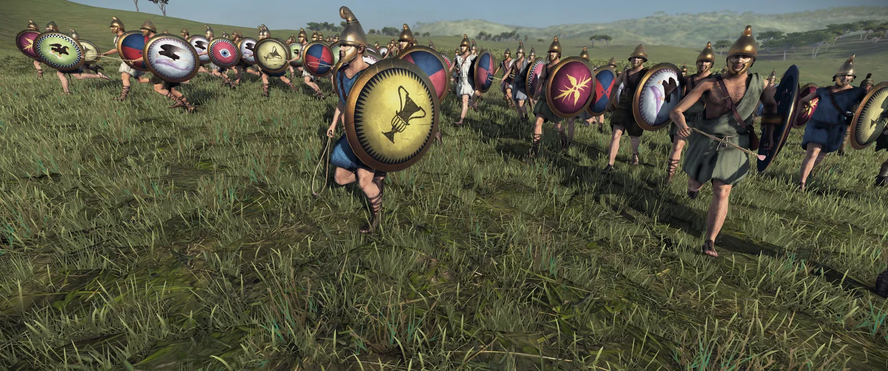
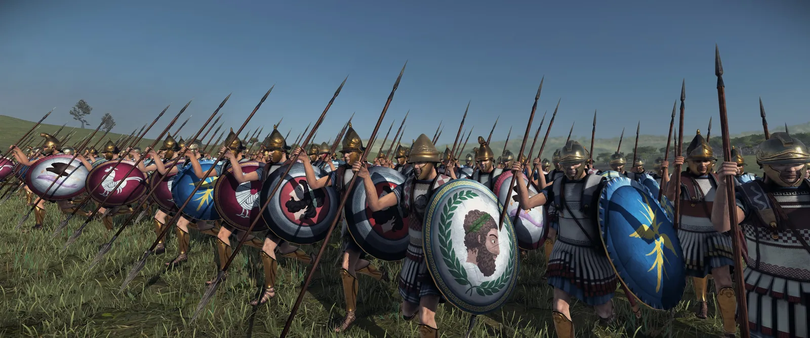
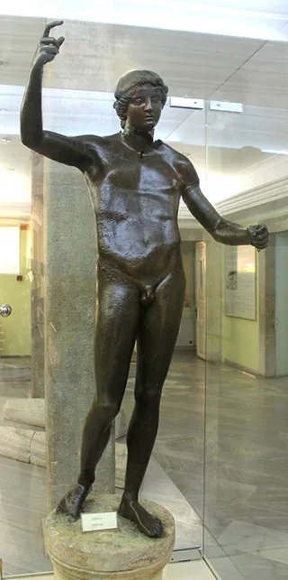
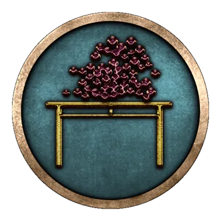
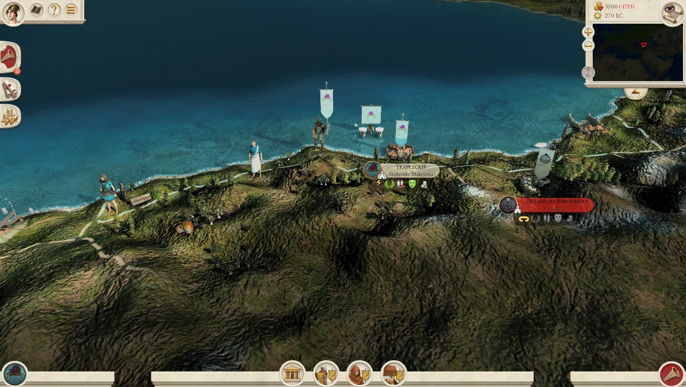

RTR: Imperium Surrectum
RTR: Imperium SurrectumMinor Greeks 7: Sinope and Trapezous
2023-08-20 · ahowl11
We made it! This DD is the last installment of our Minor Greeks DD series, here is Mausolos with our final entries:
Our second last new Greek faction is another Milesian colony, SINOPE. Founded on the northern most cape of Anatolia and commanding an excellent harbour, Sinope quickly grew rich through trade. It may have been erected on an older Cimmerian or Thessalian settlement, but its cults and institutions were Milesian in kind. Equally Milesian was the foreign policy of the Sinoppians They founded various sub colonies along the coast to further commercial activity, among them Kotyora, Kerasous and Trapezous. This network helped to promote Sinope as the central port where goods from the Caucasus, Chersonesos and Pontos were brought to be transported to Byzantion and into the Mediterranean. Sinopian products and coins were also popular in Colchis and Thrace and archaeological finds suggest close connections - Sinopian merchants probably lived in Colchian towns especially as much as Colchians would live in Sinope.
Due to its position, the city state retained its independence for centuries until the Persians seized it in the mid 4th century BC. It would only bear the foreign yoke for just over a generation, however, when Alexander smashed the Achaemenid Empire. In 270 BC, Sinope is a proud and wealthy city, though its inhabitats are experts in trade rather than warfare. In the late 3rd century BC, they became the target of the kingdom of Pontos for the first time. Polybios tells us that Sinope was ill prepared for the war and they asked their allies, the Rhodians, for support. The Rhodian assembly decided to send money, weapons, ammunition, catapults and.... well, wine. This was enough to fight off the Pontic army (maybe they got them all drunk?), but a few decades later, they would return. Pharnakes I succeeded to capture the city after a lengthy siege and made it the capital of his rising kingdom. Mithridates VI Eupator was later born in Sinope, and as the residence of the monarchy, Sinope thrived.
Its autonomy was only restored by the Romans in 70 BC, and in 63 BC, Mithridats was buried here. Caesar enlarged the city when he added a colonia of Roman veterans to it. Sinope would remain an important commercial port in imperial times, as the main rival of Herakleia Pontike, and throughout history, until today. I will leave the last words to Strabo, the Pontic Greek geographer from nearby Amaseia (Geog. 12.3.11):
"Sinopê is beautifully equipped both by nature and by human foresight, for it is situated on the neck of a peninsula, and has on either side of the isthmus harbours and roadsteads and wonderful pelamydes-fisheries (young tunnies) (...). Furthermore, the peninsula is protected all round by ridgy shores, which have hollowed‑out places in them, rock-cavities, as it were, which the people call "choinikides"; these are filled with water when the sea rises, and therefore the place is hard to approach, not only because of this, but also because the whole surface of the rock is prickly and impassable for bare feet. Higher up, however, and above the city, the ground is fertile and adorned with diversified market-gardens; and especially the suburbs of the city. The city itself is beautifully walled, and is also splendidly adorned with a gymnasion and market-place and colonnades."
Sinop(e) on its peninsula today:

A statue of Diogenes the cynic (from kynos = dog) in Sinop - Diogenes was born in Sinope in the 4th century BC



Sinopian Archers

Sinopian Epibatai

Sinopian Hoplites

We have come to our very last faction, TRAPEZOUS. Located on the southeastern shores of the Black Sea, Trapezous was deemed far away from refined Greek civilisation and thus often seen as an outpost in the remote Barbaricum. It was founded by Milesian traders who directly sailed from Sinope, either in the 8th or the 7th century BC. With a hinterland rich in wooden resources, tar and pitch and with connections to the local Colchian peoples, Trapezous soon became an important harbour. At the same time, the steep mountains which closely hugged the coast restricted the chora (territory) of the Polis and isolated it from the rest of Anatolia, and terrible winter storms rendered the port virtually useless during the cold half of the year. Despite these disadvantages of the site, the inaccessibility from many sides also meant that Trapezous was safe from most land and seaborne attacks and it could thus preserve its independence for centuries.
Moreover, Trapezus was firmly part of the Greek world: When the 10 000 Greek mercenaries who had supported the Persian pretender Kyros the Younger reached the Black Sea at Trapezous in 401 BC, they felt relief and joy and exclaimed "Thalatta! Thalatta!" - The Sea! The Sea! Thus well known, Trapezous became the destination of Arcadian emigrants in 368/367 BC, who were not ready to join the foundation of Megalopolis. Fittingly, the new citizens hailed from a town that was also called Trapezous, despite its location in Arcadia. On the southern coast of the Black Sea, they found a new home, though some will have struggled with the humid and hot climate. Even worse, the great distance to the rest of the Greek world apparently caused the Trapezuntines to speak a poorer version of Greek than elsewhere, with grammatical and spelling mistakes being common - a bit like American English compared to British English 😛
Trapezous retained its independence until the end of the 2nd century BC, when Mithridates VI of Pontos added the city to his kingdom. When he was eventually defeated by Pompey, the victorious Roman general gave Trapezous to the Galatians, but in 38 BC it returned to the Kingdom of Pontos. For another century, Trapezous was a remote harbour, but in 64 AD, emperor Nero annexed Pontos and made Trapezous the main Roman naval base in the Black Sea - with the ships of the former Royal Pontic fleet. It probably kept this role until at least the 3rd century AD, and would survive the fall of the Roman Empire.
Bronze Statue of Hermes, Trapezous, 2nd century BC



This concludes our Minor Greek Dev Diary Series, and to round out the previews, be on the look out for the last Greek Unit preview coming out today by Red Zed at 4PM BST! Thank you all so much for following and supporting us, we are extremely excited to present you with 060 and we hope you have enjoyed learning about the Greek World the past few days! Next week, we will give you a taste of what we will be showcasing with our brand new Thracians & Anatolians!